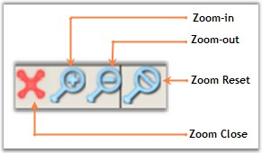
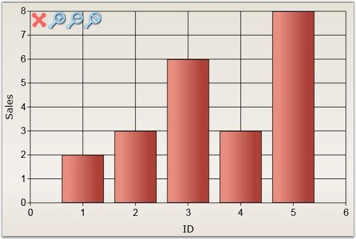
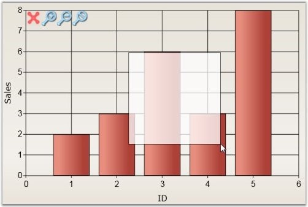
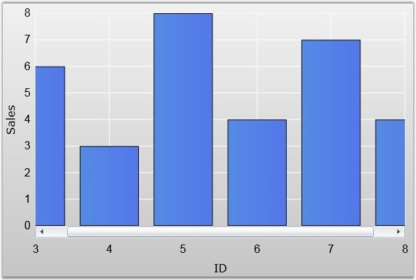
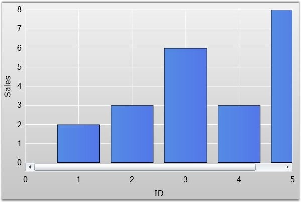
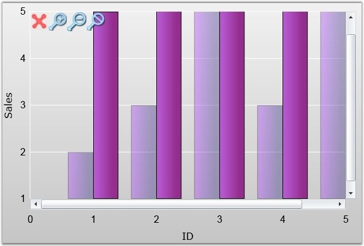
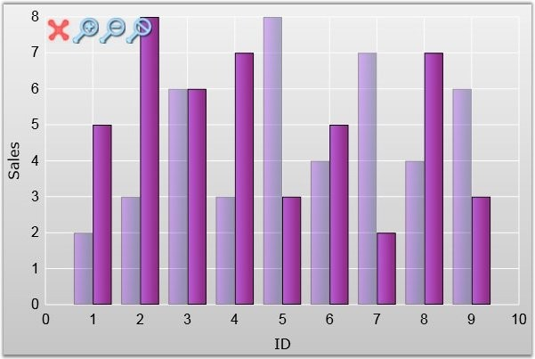
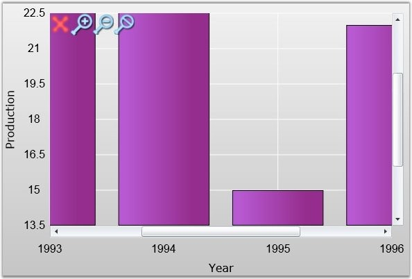

Zooming feature in the chart enables you to view the chart contents up to a narrower range of chart area. It is used to render the chart based on the zooming level, for better visualization of data. Generally, zooming level will be calculated based on the ZoomFactor property. We can zoom a chart area using various means. They are listed below.
1. Zoom using Zooming Tool Kit
2. Zoom using Mouse-Drag
3. Zoom using Code
4. Zoom using predefined properties
The rest of section discusses the above methods in detail.
1. Zoom using Zooming Tool Kit
Zooming Tool Kit is displayed at the top-left corner of the chart area. The chart series can be easily Zoomed-In and Zoomed-Out using the tool kit buttons. These buttons are best illustrated in the following screenshot.

Figure 109: Zooming by using Zooming Toolkit
Where,
· Zoom-in - You will be allowed to zoom in
· Zoom-out - You will be allowed to zoom out
· Zoom Reset - Reset the zoomed chart to original position
· Zoom Close - Close the toolkit.
 Note: The SwichZooming method must be invoked to
perform zooming operations. Refer Zooming using code section in this topic for
more details.
Note: The SwichZooming method must be invoked to
perform zooming operations. Refer Zooming using code section in this topic for
more details.
The visibility of the tool kit buttons are controlled by the following properties.
|
ZoomingToolKit property |
Description |
|
ZoomInButtonVisibility |
Sets the visibility of Zoom-In button. |
|
ZoomOutButtonVisibility |
Sets the visibility of Zoom-out button. |
|
ZoomCloseButtonVisibility |
Sets the visibility of Zoom-close button. |
|
ZoomResetButtonVisibility |
Sets the visibility of Zoom-reset button. |
|
ZoomingToolKitVisibility |
Sets the visibility of Zooming toolkit. |
|
[XAML]
<syncfusion:ChartArea syncfusion:ZoomingToolKit.ZoomInButtonVisibility="Visible" syncfusion:ZoomingToolKit.ZoomOutButtonVisibility="Visible" syncfusion:ZoomingToolKit.ZoomResetButtonVisibility="Visible" syncfusion:ZoomingToolKit.ZoomCloseButtonVisibility="Visible" syncfusion:ZoomingToolKit.ZoomingToolkitVisibility="Visible"> </syncfusion:ChartArea> |
|
[C#]
//To Set the Zooming ToolKit Visibility ZoomingToolKit.SetZoomingToolkitVisibility(chart.Areas[0], Visibility.Visible);
//To set the Zoom-Close button visibility in Zooming Toolkit ZoomingToolKit.SetZoomCloseButtonVisibility(chart.Areas[0], Visibility.Visible);
//To set the Zoom-In button visibility in Zooming Toolkit ZoomingToolKit.SetZoomInButtonVisibility(chart.Areas[0], Visibility.Visible);
//To set the Zoom-Out button visibility in Zooming Toolkit ZoomingToolKit.SetZoomOutButtonVisibility(chart.Areas[0], Visibility.Visible);
//To set the Zoom-Reset button visibility in Zooming Toolkit ZoomingToolKit.SetZoomResetButtonVisibility(chart.Areas[0], Visibility.Visible); |
The following image is the output for the Chart Zooming toolkit visibility in a chart.

Figure 110: Chart Zooming Toolkit Displayed
2. Zooming Using Mouse Drag
You can also zoom the chart area by mouse dragging. For this, you need to set the IsEnabledZoom property of both the axes, to true. This setting enables you to zoom a desired chart area (both x and y axis) by mouse dragging. The selected area in the chart will be zoomed and renders appropriate range. The below image illustrates zooming a chart by mouse dragging.

Figure 111: Zooming by using Mouse-Drag Feature
3. Zoom using Code
The chart can also be zoomed programmatically, using corresponding methods in the chart area. For this, you need to enable the zooming feature using the SwitchZooming method. Zooming mode can be enabled by calling the following methods.
· SwitchZooming - Enables zooming operations.
· ZoomInCommand - Enables zooming in
· ZoomOutCommand - Enables zooming out
· ZoomResetCommand - Enables zooming reset
· ZoomCancelCommand - Cancels the zooming
|
[C#]
//To Enable Zooming Operations chart.Areas[0].SwitchZooming();
//To perform Zoom-In command chart.Areas[0].ZoomInCommand();
//To perform the Zoom-Out command chart.Areas[0].ZoomOutCommand();
//To perform the Zoom-Reset command chart.Areas[0].ZoomResetCommand();
//To Disable the Zooming Operations chart.Areas[0].ZoomCancelCommand(); |
4. Zoom using predefined properties
Chart has some pre-defined properties using which the zooming feature can be enabled. The zooming can be achieved by using the ZoomFactor and ZoomPosition properties. The following session describes the use of these properties in code. To achieve the zoom first we need to enable the particular axis zooming by set True to IsEnabledZoom property.
|
Property |
Description |
|
IsEnabledZoom |
Enables or disables the zooming feature. |
|
ZoomFactor |
Sets the zooming level of the chart area. Typically, the Zoom factor value must be 0 to 1. If the value is 1, then the chart will not be zoomed. If the value is 0.5, then the chart will be double the original size. The zooming scroll bar automatically display in chart when the zoom factor value is less than 1. The IsEnabledZoom property must be set to true to effect Zoom factor values. |
|
ZoomPosition |
Sets the scrollbar position programmatically. By default, it takes the middle value of the zoomed chart. |
|
IsZoomAllAxes |
Indicates if the zooming is enabled for all the available axis of the chart. |
|
IsZoomable |
This property help to Enables zooming for the particular axis that is associated with the series. If IsZoomable property is set to true, then the axis associated with this series is enabled to perform zooming. |
|
[XAML]
<!--Sets IsEnabledZoom,ZoomPosition and ZoomFactor properties--> <syncfusion:ChartArea.PrimaryAxis> <syncfusion:ChartAxis EnableZooming="True" ZoomPosition="5" ZoomFactor="0.5"/> </syncfusion:ChartArea.PrimaryAxis> <!--Sets IsZoomAllAxes property--> <syncfusion:ChartArea IsZoomAllAxes="True"> <!--Chart code--> </syncfusion:ChartArea> |
|
[C#]
//Enabling the zooming feature MyChart.Areas[0].PrimaryAxis.IsEnabledZoom = true;
//Setting the zoom factor MyChart.Areas[0].PrimaryAxis.ZoomFactor = 0.5;
// Setting the zoom positioning MyChart.Areas[0].PrimaryAxis.ZoomPosition = 5;
//Setting IsZoomAllAxes property MyChart.Areas[0].IsZoomAllAxes = true; |
Run the code. The following output is displayed.

Figure 112: ZoomPosition = "5" and ZoomFactor = "0.5"

Figure 113: ZoomPosition = "0" and ZoomFactor = "0.5"
The below code show the setting of IsZoomable property.
|
[XAML]
<!--Sets IsZoomable property--> <syncfusion:Chart x:Name="chart"> <syncfusion:ChartArea Background="{StaticResource chart}" Width="600" Height="400" BorderBrush="{StaticResource storke}" BorderThickness="3" syncfusion:ZoomingToolKit.ZoomingToolkitVisibility="Visible" > <syncfusion:ChartArea.PrimaryAxis> <syncfusion:ChartAxis LabelFontSize="16" GridLineStroke="White" LineStroke="White" SmallTicksStroke="Transparent"> <syncfusion:ChartAxis.Header> <TextBlock Text="ID" FontSize="16"/> </syncfusion:ChartAxis.Header> </syncfusion:ChartAxis> </syncfusion:ChartArea.PrimaryAxis> <syncfusion:ChartArea.SecondaryAxis> <syncfusion:ChartAxis LabelFontSize="16" GridLineStroke="White" LineStroke="White" SmallTicksStroke="Transparent"> <syncfusion:ChartAxis.Header> <TextBlock Text="Sales" FontSize="16"/> </syncfusion:ChartAxis.Header> </syncfusion:ChartAxis> </syncfusion:ChartArea.SecondaryAxis> <syncfusion:ChartSeries Data="1,2,2,3,3,6,4,3,5,8,6,4,7,7,8,4,9,6" Foreground="{StaticResource series}" InactiveSeriesOpacityOnZoom="0.4" /> <syncfusion:ChartSeries Data="1,5,2,8,3,6,4,7,5,3,6,5,7,2,8,7,9,3" Foreground="{StaticResource series1}" IsZoomable="True"/> </syncfusion:ChartArea> </syncfusion:Chart> |
|
[C#]
chart.Areas[0].Series[1].IsZoomable = true; |

Figure 114: IsZoomable = "True"
InActiveSeriesOpacityOnZoom
When the IsZoomable property is set for a particular series, the remaining inactive series are displayed in the chart with less opacity. At this time, we can set the inactive series opacity by using this property. So that the series which is zoomed can be clearly visible.
The following lines of code can be used to set the inactive series opacity.
|
[XAML]
<syncfusion:ChartSeries Data="1,2,2,3,3,6,4,3,5,8,6,4,7,7,8,4,9,6" Foreground="{StaticResource series}" InactiveSeriesOpacityOnZoom="0.4" /> |
|
[C#]
chart.Areas[0].Series[0].InactiveSeriesOpacityOnZoom = 0.5; |

Figure 115: InactiveSeriesOpacityOnZoom = "0.5"
IsFractionEnabledOnZoom
At the time of zooming, the axis labels can display the fractional values by setting IsFractionEnabledOnZoom property to true, otherwise the axis label will display only the nearest digit rounded values. The following code describes the enabling or disabling fractional values on axis during the zooming.
|
[XAML]
<syncfusion:Chart x:Name="chart"> <syncfusion:ChartArea Background="{StaticResource chart}" Width="600" Height="400" BorderBrush="{StaticResource storke}" BorderThickness="3" syncfusion:ZoomingToolKit.ZoomingToolkitVisibility="Visible" > <syncfusion:ChartArea.PrimaryAxis> <syncfusion:ChartAxis LabelFontSize="16" GridLineStroke="White" LineStroke="White" SmallTicksStroke="Transparent" EnableZooming="True" IsFractionEnabledOnZoom="False"> <syncfusion:ChartAxis.Header> <TextBlock Text="Year" FontSize="16"/> </syncfusion:ChartAxis.Header> </syncfusion:ChartAxis> </syncfusion:ChartArea.PrimaryAxis>
<syncfusion:ChartArea.SecondaryAxis> <syncfusion:ChartAxis LabelFontSize="16" GridLineStroke="White" LineStroke="White" SmallTicksStroke="Transparent" EnableZooming="True" IsFractionEnabledOnZoom="True"> <syncfusion:ChartAxis.Header> <TextBlock Text="Production" FontSize="16"/> </syncfusion:ChartAxis.Header> </syncfusion:ChartAxis> </syncfusion:ChartArea.SecondaryAxis>
<syncfusion:ChartSeries Data="1990,15,1991,28,1992,36,1993,27,1994,33,1995,15,1996,22,1997,17,1998,23" Interior="{StaticResource series1}" /> </syncfusion:ChartArea> </syncfusion:Chart> |
|
[C#]
chart.Areas[0].PrimaryAxis.IsFractionEnabledOnZoom = true; |
Run the code. The following output is displayed.

Figure 116: X-Axis IsFractionEnabledOnZoom = "False"; Y-Axis IsFractionEnabledOnZoom = "True"